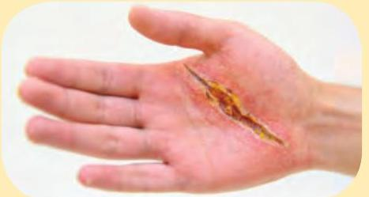
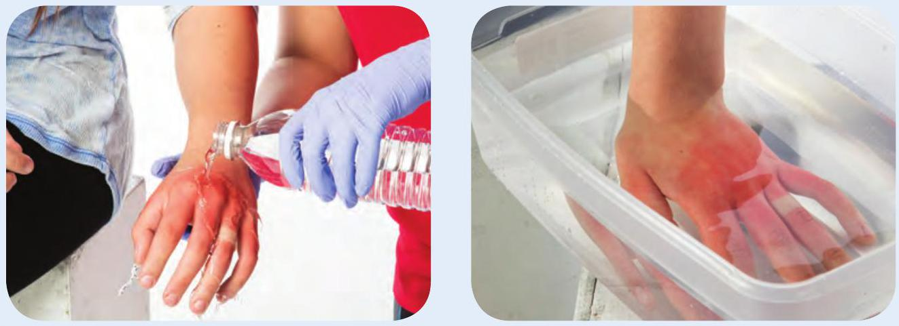
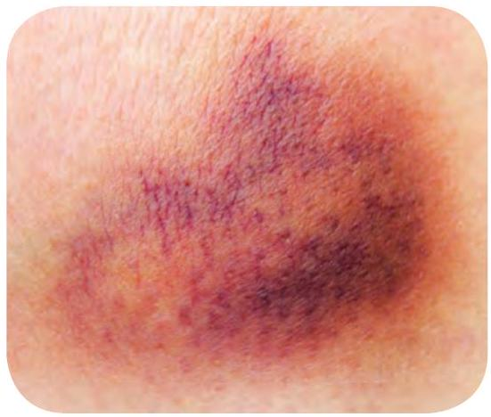
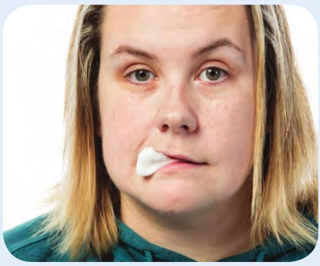

8 Wound Care
Bandaging Guidelines
- Use clean, sterile dressings.
- Check circulation below the injury before and after applying a bandage. If circulation is reduced, loosen the bandage.
- If blood soaks through, leave the bandage and apply another on top.
Cuts and Scrapes
Care
- If the wound is bleeding significantly, apply direct pressure until it stops.
- Rinse the wound for 5 minutes with clean, running water. 
- Apply an antibiotic ointment or cream and bandage the wound.

Burns
Burns are soft-tissue injuries caused by chemicals, electricity, heat, or radiation. Burns can be:

Superficial

Partial Thickness

Full Thickness
Call
Call EMS/9-1-1 and get an AED immediately if:
- The burns make it difficult for the person to breathe.
- The burns were caused by chemicals, explosions, or electricity.
- The burns are full thickness or involve a large amount of blistered or broken skin.
- The burns cover the face, neck, hands, genitals, or a larger surface area.
Care
- Cool the affected area with water or a clean, cool (but not freezing) compress for at least 10 minutes. 
- Remove jewellery and clothing from the burn site, but do not attempt to move anything that is stuck to the skin.
- Cover the burn loosely with a dry, sterile dressing.

Chemical Burns
Care
- Put on protective equipment.
- Remove any clothes that might have the chemical on them, and brush any dry chemical powder off the person's skin.
- Flush with large amounts of cool running water for at least 15 minutes.
Electrical Burns
Care
- Ensure that the electrical current has been turned off.
- Keep the person still.
- Look for and treat two burns (the entry and exit points).

Bruises
Call
If the person is in severe pain or cannot move a body part without pain, or you suspect life-threatening internal bleeding, call EMS/9-1-1.
Care
- Apply a cold pack, wrapped in a towel, for up to 20 minutes, and then remove it for 20 to 30 minutes. Repeat until the pain is reduced.

Splinters
Care
- Gently grab the exposed end of the splinter with tweezers and carefully pull it out. Treat the wound as a cut.

Nosebleeds
Call
Call EMS/9-1-1 if the bleeding continues for more than 15 minutes.
Care
- Have the person sit with the head slightly forward.
- Pinch the person's nostrils for 10 to 15 minutes.

Knocked-Out Teeth
Call
Call EMS/9-1-1 if the tooth was knocked out by a forceful blow or if you suspect more serious injuries.
Care
- Have the person bite down on a clean dressing. 
- Carefully pick up the tooth by the crown (the whiter part) and keep it protected.
- Get the person and the tooth to a dentist as soon as possible.

Eye Injuries
Call
Call EMS/9-1-1 if there is an impaled object in or near the eye, the eye is out of the socket, or the eye has been exposed to a chemical.

If there is something in the eye but it is not impaled:
- Have the person blink several times.
- Gently flush the eye with running water.
- If these steps do not remove the object, the person should seek medical attention.
If there is a chemical in the eye:
- Gently flush the eye with running water (away from the unaffected eye) for at least 15 minutes or until EMS personnel arrive.
If the eyes were flash burned:
- Cover the eyes with a cool, wet cloth.
- Make sure the person gets medical attention.
Impaled Objects
Call
Call EMS/9-1-1.
Care
- Leave the object in place.
- Stabilize the object without putting direct pressure on it.
- Secure the dressings in place.


Chest Injuries
What to Look For
- Deformity or swelling
- Guarded, shallow breathing
- Bruising
- Coughing up blood
If chest is penetrated:
- Gasping or difficulty breathing
- Bleeding from an open chest wound that may bubble
- A sucking sound coming from the wound with each breath
Call
Call EMS/9-1-1 and get an AED.
Care
- Have the person rest in a comfortable position, keeping the person as still as possible.
- If the wound is bleeding profusely, apply direct pressure. If bleeding is minor, do not apply pressure or a dressing.
- If there is no penetrating injury, give the person something bulky (such as a towel) to hold against the chest.